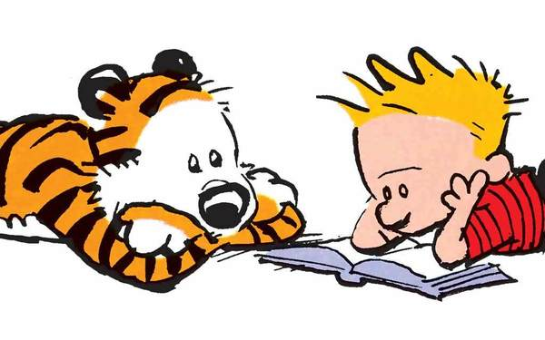

Now that you’ve narrowed down to your best idea, it’s time to come up with a cast of
characters and a setting for them to be in. Is your character the chosen one on a sacred
quest to find the mystical mcguffin, or are they an average Joe who likes to talk about
video games with their best friend? Whatever the case, they should fit the concept of the
comic to a T, so that they don’t feel out of place. As for the setting, this can also vary in
complexity depending on the type of story you’re making. In any of these cases, it’s
always a good idea to make character sheets for your main cast and other recurring
characters in order to keep them consistent in terms of personality and look. Don’t be
afraid to develop them even further on in the story either.Text content and instructions go here. CSS will add more flavor and design to this text box